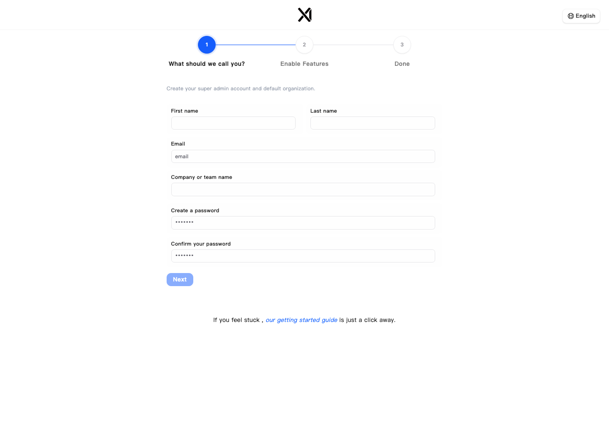
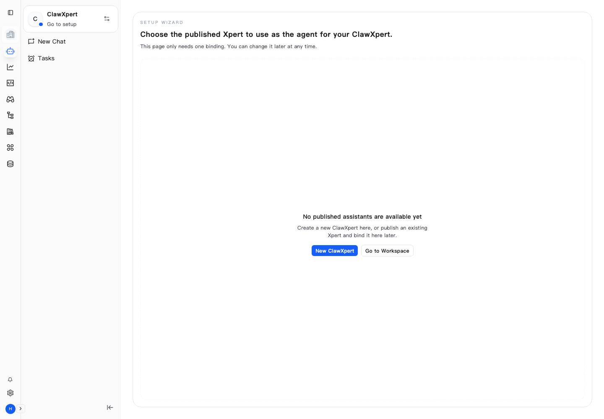
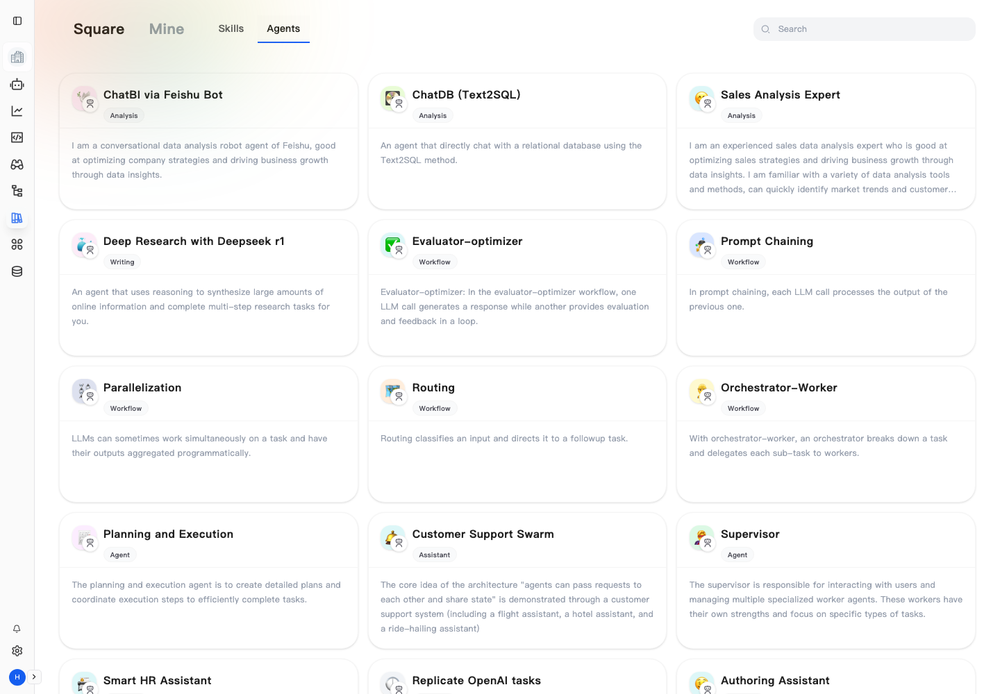
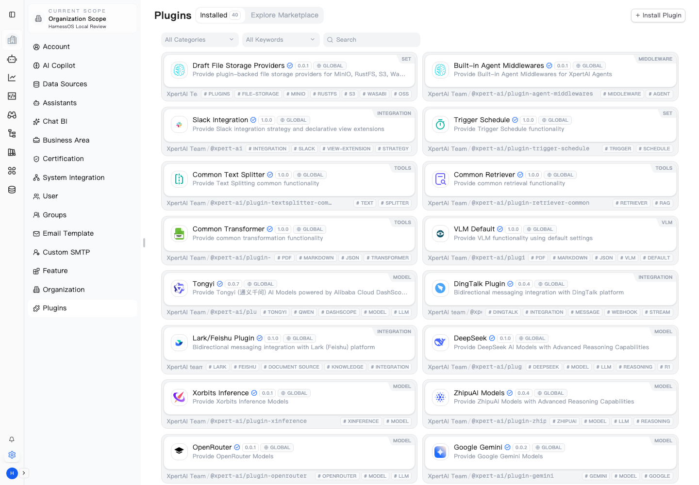

Docker 服务与 API health 已通过，API 返回 database/storage/cache 均 up。
自动化完成本地租户初始化的第一段流程，核心页面已可进入。
Xpert 截图只能作为体验参考，不能作为 HarnessOS runtime evidence。
自动化巡检结果
| 入口 | 最终 URL | 可见状态 | 证据 |
|---|---|---|---|
| Onboarding | /onboarding |
欢迎页可见，API onboard 200 | xpert-onboarding-20s.png |
| Onboarding Started | /onboarding/tenant |
管理员/组织创建表单可见 | xpert-onboarding-started-20s.png |
| Root / Chat | /chat/clawxpert |
ClawXpert setup wizard 可见 | xpert-root-20s.png |
| Chat Common | /chat/x/common |
Assistant 未配置，给出设置入口 | xpert-chat-common-20s.png |
| Explore | /explore |
Agent/Skill 市场卡片网格可见 | xpert-explore-20s.png |
| Plugins | /settings/plugins |
插件管理页可见，内置插件列表可见 | xpert-plugins-20s.png |
1. Onboarding 与初始化

参考点：清晰的三/四步初始化、中心化表单、轻量品牌露出、明确下一步按钮。 HarnessOS V12 应至少提供 product shell onboarding、API health、环境配置状态和项目入口。
2. Chat / ClawXpert 工作台

参考点：左侧全局导航 + 工作台侧栏 + 主内容设置向导。HarnessOS 可以借鉴这种布局， 但必须用 WorkbenchConversation、WorkflowDiffProposal 和 Evidence refs 承载语义。
3. Agent / Skill 市场

参考点：Square/Mine/Skills/Agents 分层、卡片网格、分类标签、安装入口。 HarnessOS V14 应映射为 Plugin/Skill/Tool/MCP manifests、compatibility decisions 和 scoped activation。
4. 插件管理

参考点：Installed / Explore Marketplace / Install Plugin、分类过滤、版本、scope、作者、标签。 HarnessOS 不能直接执行未审插件，需要兼容性、scope、policy、redaction 和 unsafe denial 证据。
对 HarnessOS V12-V15 的可迁移设计点
- V12：产品壳、onboarding、Workspace/Project/App、Workbench 入口。
- V13：Studio 画布、Agent/节点 inspector、WorkflowDiff 可视化确认。
- V14：Agent/Skill/Plugin/MCP 市场式浏览、安装、scope 绑定、拒绝原因。
- V15：运行状态、插件/模型配置、健康检查、可观测仪表盘、自托管 smoke。
结论：采用方案 C。Xpert 作为交互和信息架构 benchmark；HarnessOS 原生实现， 保留 BFF/DTO、runtime truth boundary、Evidence Chain 和 No False Green。